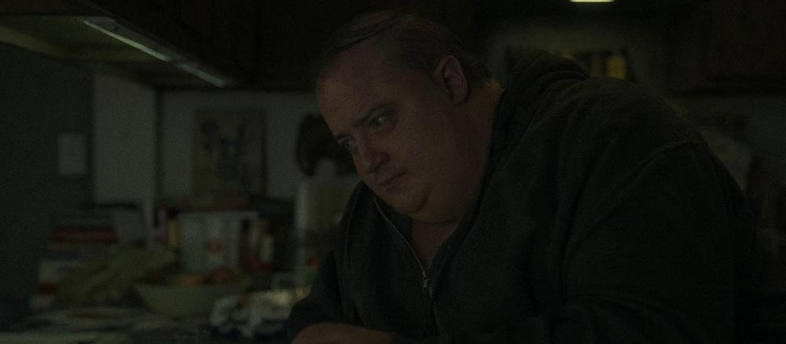

12/14/2023
Where to Watch? SHOWTIME
Darren Aronofsky, the award-winning director known for movies like Requiem for a Dream, The Wrestler, and Black Swan is undoubtedly a master of cinema. And when I say master, I mean like a Kung Fu master, because he's just really good at nonstop punching you in the heart. No, seriously, it feels like this man is obsessed with leaving people bawling their eyes out.
"You bringing the cry back?"
"Hashtag cry together."
"Hashtag cry together, you're bringing it back!"
That's why it's no surprise that The Whale accomplishes the same thing, even if it was just directed by Aronofsky from a script written by Samuel Hunter, a playwright who adapted it from one of his plays of the same name.
The Whale stars the Internet's favorite comeback actor/sweetheart Brendan Fraser as an overweight English teacher who struggles to reconnect with his estranged daughter before his unhealthy habits finally catch up to him. If it isn't obvious already, this movie is all emotional trauma, well-executed emotional trauma. But my personal masochistic hurt-me-Aronofsky tendencies aside, there really is a lot in this movie to unpack, as it tackles a multitude of deep, complex themes, some handled better than others, over the course of its gloomy, claustrophobic two-hour run.
A few of the themes most at the forefront of this tragic movie are actually more positive and hopeful than you'd expect if you still haven't seen it. Mainly, they are themes and messages of acceptance, of seeing beyond the exterior, of expressing your truth, of hope, faith in others and in their value, their ability, and their inherent goodness, of belief that THAT goodness can make it feel like people are "incapable of not caring." And those are just some of the sweet, wholesome notions that Aronofsky and Hunter tackle as they show us the miserably mundane day to day of Charlie, who is dying but is clearly too depressed to be doing anything to stop it.
It's these themes and their final expression in the heartfelt, emotional, hopeful conclusion that made me feel glad I braced through almost two nonstop hours of sorrow and discomfort. At the end, it's a reward to us as viewers to see Charlie's faith in humanity and in his own daughter, Ellie, in particular, be rewarded, and to be able to see that daughter finally express a modicum of love and care to him in return, even if it may be too late. It's still a soothing expression of forgiveness at the end of the movie filled with grudges.
But these positive themes and messages are not everything The Whale has to offer. They're the most focused upon, being the basis of Aronofsky and Hunter's intentions with the movie, their intended interpretation of it, if you will, or at least what I think it to be based on things Aronofsky has mentioned in interviews.
"And that's why the film has hope and the film delivers, I think, on hope through what Charlie gives to his daughter."
However, there are multiple other themes here that are far grimmer and more pessimistic that can leave you looking at the movie in a whole different light.
I had an interesting experience with The Whale, where a close friend and I watched it separately and then discussed it afterwards. The interesting part was when I realized that our interpretations of the movie were completely opposite. I mean, sure, this is art, and art is open to interpretation, and everyone's going to understand it in their own distinct way, but usually the experiences we have with traditional movies are at least similar or share similar trains of thought.
It was particularly interesting with The Whale because our interpretations were COMPLETELY opposing. This difference of interpretation did, however, stem from specific themes that we both agreed were present in the movie, albeit some that, to me, were slightly washed away in the eventual rainfall of their more optimistic counterparts.
Now, the first of these darker themes, and the one that is undoubtedly crucial to the story, is that of obsession. The movie's title, The Whale, owes itself to Moby Dick, a classic piece of literature whose main themes are of obsession and vengeance, as it follows ship captain Ahab's grueling attempts to hunt down an infamous white whale, Moby Dick, to the point that he kills himself in the pursuit of that goal. In The Whale, Charlie holds onto an essay about Moby Dick, which we eventually learn was written by his daughter, and constantly reads and recites it for comfort. That is our initial connection to the theme of obsession, but this notion is also clearly expressed through most of the characters in the movie.
Charlie is obsessed with reconnecting with his daughter. He'll do anything to accomplish that, subjecting himself to humiliation from her and alienating his only friend and caretaker, Liz, just so he can gain back her favor. Meanwhile, it could be argued that Liz is obsessed with caring for Charlie, having seen her brother, Charlie's lover Allan, struggle with depression for months before he finally took his own life, and having failed to help him then. Thomas, a young missionary who visits Charlie, hoping to bring him to salvation through religion, is obsessed with making a change through his church and through God, and with regaining the acceptance of his family.
Obsession is a common streak throughout this movie, but the theme that was interesting was the result of that obsession, its main consequence, and that was the total blindness and general ignorance that The Whale's characters had driven themselves into.
Liz cares so much about Charlie that she's blind to, or at least willfully ignoring the fact that she's enabling him. Thomas is so obsessed with getting that sense of fulfillment by using his religion to, "help someone" that he ignores the fact that all he's doing is pouring salt on Charlie's past wounds and twistedly blaming the struggles and results of his depression on his homosexual relationship. But this obsession-to-the-point-of-ignorance affects Charlie most of all, who manifests this blindness in the form of what can be considered toxic positivity.
As Charlie tries to get closer to his daughter, who he abandoned for eight years after divorcing his wife and running off with his lover, all Ellie does is push back. She's angry, frustrated, grudging, and oftentimes even cruel. Her mom, Charlie's ex-wife, talks to Charlie about this near the end of the movie, blaming herself for how Ellie turned out and telling Charlie that Ellie is evil. Charlie refuses to believe that, holding on to faith that she's an amazing person all throughout. He spends the movie refusing to believe anything else, despite the fact that Ellie does many things that highlight her cruelty, but that he chooses to either ignore or interpret differently.
For one, Ellie bullies both her parents through degrading pictures of them on social media, recently doing so with Charlie. Moreover, when Charlie puts out a plate outside his windowsill, filling it with apples for birds to feed, Ellie smashes it. Later on, when Thomas admits that he'd stolen money from his church and then run away, she records his confession and sends it to both the church and his family. This last one ends up turning out well for Thomas, whose family forgive him and ask him to come back.
We, however, have no indication that Ellie did this out of kindness or that her intention was to help Thomas. We do see that she is attracted to him or interested in him somehow, but we never really know if this is anything beyond morbid fascination. Charlie chooses to believe that Ellie does this out of kindness, but that's only because it reinforces the notion he has in his head. He thinks nothing but positively of Ellie and even though he fears how people in general would react to him and his appearance, he still believes that deep down, they are amazing. Charlie says this himself, frequently displaying that positivity in his dialogue, but so does his ex-wife, who mentions how it always used to annoy her back when they were still together.
Charlie's complicated relationship with his own faith in humanity is well-established throughout the film. Additionally, Charlie spends the movie encouraging people to speak their truth, telling his students to write what they truly think and believe. At the same time, he hides his own truth from the world, never leaving his house or letting anyone see his appearance up until the very end, seemingly afraid of how people would react despite believing in their inherent goodness.
Okay, so we know that Charlie is unusually positive. We know that his faith in people is great, that he thinks it's hard for them not to care. We see that Ellie exhibits clear signs of cruelty. Add to that the sort of ignorance the side characters have in respect to their own obsessions, and then mix it with the gritty, grounded tone that the movie enforces all throughout its runtime.
Now think about the ending. Think about Ellie finally showing her father forgiveness after holding on to YEARS of hate towards him, her displaying affection when all she'd done before is be cruel. Think about Charlie finally being able to make the walk from the couch to his daughter when previously in the movie he'd failed, even when his physical state had been better. Think of the highly dramatized moments before Charlie's death, how light streaks into the house, how winds rush against his and Ellie's faces, how he floats up off the ground at the last moment, how everything is almost so perfect in those final moments, a stark contrast to the bleak and realistic setting that had come before.
Would it be too farfetched, then, to suggest that these last moments were merely Charlie's dying fantasy, his one desire and hope before he died? The hope that he'd done one thing right in this world, that he hadn't scarred his daughter beyond recognition and made her truly cruel and hateful? Could it not be that he is imagining all of this as a way to make his final moments easier?
By that interpretation, the movie is commentary on the dangers of obsession and willful blindness to the real truth of things. It's a critique of toxic positivity, a lesson that sometimes you make mistakes that you can never correct, that fairy tale endings are not a thing in real life, and that years of pain cannot be washed away in a couple of hours. And I find great beauty in this interpretation. It scratches that emotionally masochistic urge that Aronofsky has created within me, utilizing the film's themes to tell an equally important lesson, albeit a far less hopeful one.